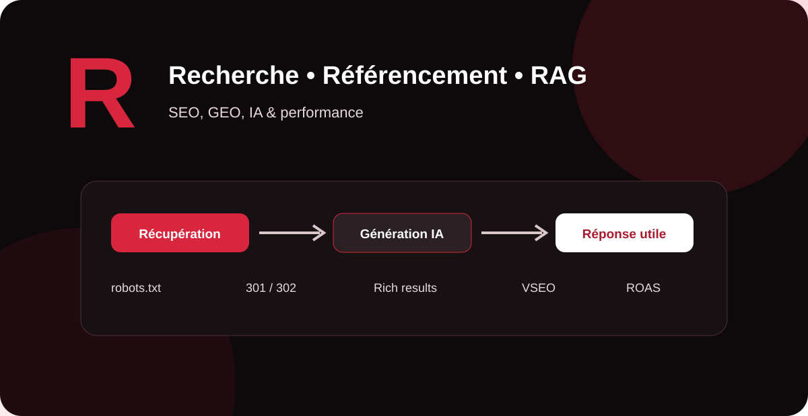

Le vocabulaire du référencement évolue avec les moteurs de recherche, la publicité, l’intelligence artificielle et les nouveaux parcours d’achat. Ce guide MinoSeo explique simplement les principaux termes en R, avec leur définition, leur intérêt et les bonnes pratiques à retenir pour une stratégie SEO et GEO durable.

RAG Retrieval-Augmented Generation
Le RAG (Retrieval-Augmented Generation, ou génération augmentée par récupération) est une architecture d’IA qui associe un modèle génératif à un système capable de rechercher des informations dans des sources externes : base documentaire, base de données, moteur de recherche ou corpus privé.
Au lieu de répondre uniquement à partir des connaissances apprises lors de son entraînement, le système récupère d’abord des passages pertinents, puis les fournit au modèle pour construire une réponse contextualisée. Cette approche peut améliorer l’actualité, la précision et la traçabilité des réponses, à condition que les sources récupérées soient elles-mêmes fiables.
ROAS
Le ROAS (Return On Ad Spend) mesure le retour généré par les dépenses publicitaires. Une formule courante est : valeur de conversion ÷ dépenses publicitaires. Si une campagne dépense 1 000 € et génère 4 000 € de valeur attribuée, son ROAS est de 4, soit 400 %.
Le ROAS est surtout un indicateur SEA et média. Il ne doit pas être confondu avec le ROI, qui peut intégrer davantage de coûts et la marge réelle. Pour piloter une acquisition rentable, il faut donc lire le ROAS avec le coût d’acquisition, la marge, la valeur client et la qualité des conversions.
ROPO
ROPO signifie généralement Research Online, Purchase Offline : l’internaute effectue ses recherches en ligne avant d’acheter dans un point de vente physique. Ce comportement est fréquent pour les commerces locaux, l’automobile, l’équipement, la santé, l’immobilier ou les services nécessitant un contact humain.
Le SEO local joue ici un rôle important : fiches établissement, horaires, avis, pages locales, disponibilité, coordonnées et informations pratiques peuvent influencer une décision qui se concrétisera hors ligne.
Reseaux Neuronaux Recurrents
Les réseaux neuronaux récurrents, ou RNN (Recurrent Neural Networks), sont une famille de réseaux neuronaux conçus pour traiter des données séquentielles. Leur architecture permet de conserver une forme d’état issu des étapes précédentes, ce qui les a rendus utiles pour le texte, la parole ou les séries temporelles.
Des variantes comme les LSTM et GRU ont été développées pour mieux gérer les dépendances longues. Dans de nombreux systèmes modernes de traitement du langage, les architectures Transformer ont ensuite pris une place dominante, notamment parce qu’elles traitent efficacement le contexte à grande échelle.
Responsive design
Le responsive design est une approche de conception permettant à une page d’adapter sa présentation aux différentes tailles d’écran : smartphone, tablette et ordinateur. La grille, les images, la navigation, la typographie et les boutons doivent rester lisibles et utilisables.
Pour le SEO, un design responsive bien conçu facilite la cohérence du contenu et des URL entre appareils. Il contribue également à une meilleure expérience utilisateur, mais il faut en parallèle surveiller la vitesse, la stabilité visuelle et l’interactivité.
referrer site
Un referrer (site référent) désigne la source web depuis laquelle un utilisateur arrive sur une page en cliquant sur un lien. En web analytics, le trafic referral permet ainsi d’identifier certains sites qui envoient des visiteurs.
Cette donnée est utile pour mesurer l’impact de partenariats, articles invités, citations, annuaires de qualité ou campagnes de relations presse. Selon les navigateurs, les politiques de confidentialité et les paramètres techniques, l’information de référent peut toutefois être partielle.
Résultats géolocalisés
Les résultats géolocalisés sont des résultats adaptés à une zone géographique ou au contexte local de l’utilisateur. Pour une recherche à intention locale, le moteur peut tenir compte de la localisation, des termes employés et de la pertinence des établissements ou pages locales.
Une stratégie de SEO local travaille notamment la cohérence des informations d’entreprise, les pages locales, les avis, la pertinence du contenu et la présence de l’établissement dans les services cartographiques et de recherche.
résultats organiques
Les résultats organiques correspondent aux résultats naturels affichés par un moteur de recherche, par opposition aux emplacements publicitaires achetés. Leur visibilité dépend des systèmes de classement du moteur, de la pertinence du contenu, de la qualité technique, de la compréhension de la page et de nombreux autres signaux.
Le SEO vise à augmenter la visibilité qualifiée dans ces résultats sans payer directement chaque clic. Il faut néanmoins investir dans le contenu, la technique, l’analyse et parfois la popularité pour construire cette visibilité.
rich snippets
Les rich snippets, souvent rapprochés des rich results, sont des présentations enrichies dans les résultats de recherche : informations supplémentaires, images, notes ou autres éléments selon les fonctionnalités prises en charge par Google.
Les données structurées aident Google à comprendre explicitement certaines informations d’une page et peuvent la rendre éligible à des résultats enrichis. Cette éligibilité ne garantit toutefois pas l’affichage effectif d’un enrichissement.
Référencement video VSEO
Le VSEO (Video Search Engine Optimization) regroupe les techniques destinées à améliorer la découverte et la compréhension des vidéos par les moteurs et plateformes. Une stratégie VSEO travaille le sujet, le titre, la description, la page d’hébergement, la miniature, le contexte textuel, l’accessibilité et, lorsque pertinent, les données structurées vidéo.
Sur un site web, Google recommande notamment de rendre la vidéo accessible et indexable. Le balisage VideoObject peut fournir des informations telles que le nom, la miniature, la date de publication ou la durée.
robots.txt
Le fichier robots.txt, placé à la racine d’un site, donne des instructions d’exploration aux robots compatibles. Il permet par exemple d’indiquer à Googlebot que certaines zones ne doivent pas être explorées.
Une règle importante : robots.txt n’est pas un mécanisme fiable pour demander la désindexation d’une page. Pour empêcher une page accessible d’être indexée, on utilise plutôt une directive noindex appropriée. Une mauvaise configuration de robots.txt peut empêcher Google d’accéder à des ressources ou contenus importants.
Redirection 302
Une redirection 302 est un code HTTP indiquant traditionnellement une redirection temporaire. Elle convient lorsqu’une ressource est déplacée provisoirement et que l’URL d’origine doit rester la référence à long terme.
En SEO, le choix du code doit refléter l’intention réelle. Pour un changement définitif d’URL, une redirection permanente est généralement plus claire. Il faut aussi éviter les chaînes de redirections inutiles, qui compliquent l’exploration et ralentissent l’accès à la destination.
Redirection 301
Une redirection 301 indique qu’une ressource a été déplacée de façon permanente vers une nouvelle URL. Elle est couramment utilisée lors d’une migration, d’un changement de structure d’URL, d’une fusion de contenus ou du passage d’une ancienne page vers sa remplaçante.
Une migration propre associe les anciennes URL aux destinations réellement équivalentes, met à jour les liens internes et les canonicals, puis surveille l’exploration et l’indexation. Rediriger toutes les anciennes pages vers la page d’accueil est rarement une bonne stratégie.
Référenceur SEO
Le référenceur SEO est le professionnel chargé d’améliorer la visibilité organique d’un site dans les moteurs de recherche. Son travail couvre généralement l’audit technique, la recherche d’intentions et de mots-clés, l’architecture, le contenu, le maillage interne, la popularité, l’analyse des performances et le suivi des évolutions des moteurs.
Un bon référenceur ne cherche pas seulement des positions : il relie visibilité, trafic qualifié, conversions et objectifs métier. Il travaille également avec les développeurs, rédacteurs, designers et équipes marketing.
Référenceur GEO
Le référenceur GEO (Generative Engine Optimization) travaille la visibilité et la compréhension d’une marque ou de ses contenus dans les environnements de recherche et de réponse assistés par IA. Il s’intéresse à la clarté des entités, aux preuves d’expertise, à la cohérence des informations, à la structure des contenus et à leur capacité à répondre précisément aux questions.
Le GEO ne remplace pas le SEO : les deux disciplines se complètent. Un socle technique accessible, des contenus utiles, des sources crédibles et une identité de marque cohérente servent aussi bien la recherche traditionnelle que les systèmes génératifs qui récupèrent, synthétisent ou citent des informations.
Tableau de synthèse : les termes R à retenir
| Terme | Domaine | À retenir |
|---|---|---|
| RAG | IA / GEO | Récupère des sources avant de générer une réponse contextualisée. |
| ROAS | SEA | Mesure la valeur générée par rapport aux dépenses publicitaires. |
| ROPO | Marketing local | Recherche en ligne puis achat hors ligne. |
| RNN | IA | Réseau neuronal adapté aux séquences. |
| Responsive design | UX / technique | Adapte l’interface aux différentes tailles d’écran. |
| Rich results | SEO | Affichages enrichis rendus possibles notamment par les données structurées. |
| robots.txt | SEO technique | Contrôle l’exploration, pas la désindexation à lui seul. |
| 301 / 302 | SEO technique | Redirections permanente / temporaire selon l’intention. |
| Référenceur SEO / GEO | Visibilité | Optimise la présence dans la recherche classique et les environnements génératifs. |
Renforcez votre visibilité SEO et GEO
MinoSeo vous accompagne sur la technique, le contenu, la popularité et l’optimisation pour les moteurs de recherche et les environnements IA.
Demander un audit gratuit